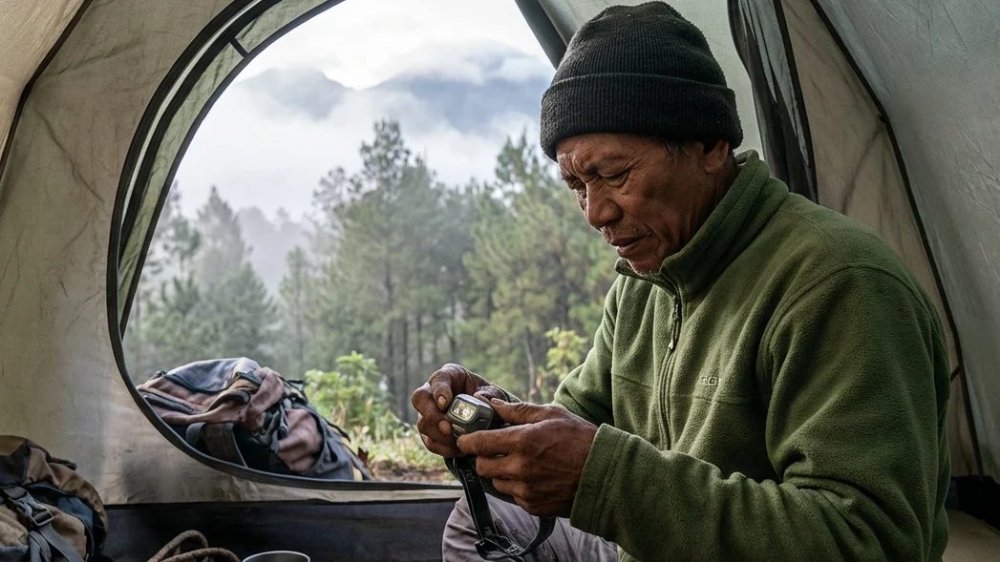

1. Pentingnya Manajemen Ransel (Packing) yang Cerdas
Salah satu kesalahan paling fatal yang sering dilakukan oleh wisatawan pemula saat merencanakan petualangan ke alam bebas adalah kecenderungan untuk membawa seluruh isi lemari mereka. Memasukkan barang ke dalam tas tanpa strategi (asal muat) tidak hanya akan membuat ransel (carrier) Anda menjadi seberat batu, tetapi juga berpotensi mengorbankan barang-barang yang justru memiliki fungsi vital bagi keselamatan nyawa (survival) Anda di malam hari.
Melalui literasi bertajuk Checklist Perlengkapan Pribadi Saat Kemah: Barang Esensial yang Wajib Masuk Ransel Anda ini, kita akan membongkar tuntas rahasia para pendaki profesional dalam mengelola barang bawaan. Bahkan jika Anda memutuskan untuk menyewa paket tenda di fasilitas wisata *Comfort Camping* (seperti di kawasan Batu Malang), Anda tetap dituntut untuk mandiri dalam menyiapkan perlengkapan yang menempel pada tubuh Anda sendiri. Mari kita bahas secara rinci apa saja barang esensial yang tidak boleh tertinggal agar liburan Anda tidak berujung pada penderitaan fisik.
Menghindari Beban Berlebih (Overpacking)
Seni dari sebuah perjalanan alam liar adalah membedakan antara "kebutuhan esensial" dan sekadar "keinginan". Membawa tiga buah jaket tebal yang fungsinya sama, atau membawa celana *jeans* yang beratnya setara dengan balok kayu saat basah, adalah contoh nyata dari overpacking. Ransel yang kelebihan beban akan menyiksa pundak Anda, membuat tenaga cepat terkuras habis bahkan sebelum Anda mendirikan tenda.
Prioritas Keamanan dan Kenyamanan Fisik
Tujuan dari membuat sebuah daftar (checklist) adalah untuk memastikan bahwa barang yang masuk ke dalam tas memiliki utilitas (kegunaan) yang maksimal. Anda harus memprioritaskan barang-barang yang mampu melindungi tubuh dari serangan cuaca ekstrem (suhu beku, hujan, dan angin badai). Dalam dunia outdoor, keamanan dan kenyamanan harus selalu diletakkan di atas pertimbangan estetika visual semata.
BACA JUGA (Edukasi Logistik):
2. Sistem Pakaian (Layering System) Penghalau Dingin
Tubuh manusia rentan terhadap hipotermia ketika berada di area pegunungan. Untuk bertahan hidup, Anda diwajibkan untuk menguasai teknik berpakaian berlapis atau 3-Layering System.
Pakaian Dalam (Base Layer) Penyerap Keringat
Lapis pertama yang bersentuhan langsung dengan kulit Anda adalah Base Layer. Fungsinya bukan untuk menghangatkan, melainkan untuk menyerap keringat dan membuangnya ke luar dengan cepat agar kulit tetap kering. Sangat Dilarang menggunakan bahan katun karena sifatnya yang mengikat air. Saat keringat tertahan di kain katun, angin gunung akan mengubahnya menjadi kompres es yang membekukan dada Anda. Pilihlah kaus berbahan sintetis seperti dry-fit atau wol merino murni.
Lapisan Insulasi (Mid Layer) Penghangat Tubuh
Lapisan kedua bertugas sebagai "oven" penyimpan suhu panas (insulasi) yang dipancarkan oleh hasil metabolisme tubuh Anda. Jika cuaca mulai mendingin, keluarkanlah jaket dari bahan fleece (polar fleece) atau jaket rajut wol yang tebal dari dalam ransel Anda. Jaket ini memiliki rongga-rongga udara mikro yang bertugas memerangkap hawa hangat agar tidak membaur dengan suhu beku di sekitar tenda.
Jaket Pelindung (Outer Layer) Penahan Badai
Sehangat apa pun jaket fleece Anda, hawa panasnya akan lenyap seketika jika ditiup oleh angin lembah. Di sinilah fungsi absolut dari cangkang luar (Outer Layer). Anda wajib membawa jaket berbahan parasut tebal berjenis Windbreaker (penahan angin) atau Hardshell yang memiliki lapisan anti-air (waterproof). Jaket ini bertindak sebagai tameng fisik yang melindungi dua lapisan pakaian di dalamnya dari serangan angin kencang dan rintik hujan.
3. Perlindungan Ekstremitas Tubuh
Bagian ujung tubuh (ekstremitas) adalah titik terlemah manusia dalam menahan suhu beku. Saat kedinginan, aliran darah akan difokuskan ke organ vital (jantung dan paru-paru), sehingga kaki, tangan, dan telinga akan menjadi kebas.
Kupluk (Beanie) dan Sarung Tangan
Tahukah Anda bahwa hampir 40% suhu panas tubuh menguap terbuang melalui ubun-ubun kepala? Membawa sebuah kupluk berbahan rajut (beanie hat) adalah investasi keselamatan yang teramat murah namun sangat menyelamatkan nyawa. Begitu pula dengan telapak tangan; sepasang sarung tangan berbahan polar akan mencegah jari-jari Anda mengalami mati rasa saat harus memegang peralatan logam atau menyeduh minuman panas di malam hari.
Kaus Kaki Ganda dan Sepatu Trekking
Bawalah minimal tiga pasang kaus kaki panjang. Sepasang untuk aktivitas berjalan di siang hari, dan sepasang lagi khusus untuk digunakan saat Anda tidur di dalam tenda (sangat dianjurkan menggunakan kaus kaki rangkap dua untuk menghindari kram kaki di subuh hari). Untuk mobilitas, tinggalkan sepatu kanvas atau sneakers harian Anda. Gunakanlah sepatu khusus gunung (trekking shoes) atau sandal gunung bertapak tebal untuk melindungi telapak kaki dari batu tajam dan tanah yang licin berlumut.

Mempersiapkan alat penerangan personal seperti headlamp sangatlah krusial untuk menunjang aktivitas malam hari, baik saat memasak maupun ketika harus keluar dari tenda. (Ilustrasi: Unsplash)4. Perlengkapan Tidur Pribadi (Personal Sleep System)
Meski Anda menyewa tenda beserta matras di fasilitas wisata alam, membawa sistem pelindung tidur pribadi (personal sleep system) adalah keharusan mutlak bagi setiap individu.
Kantong Tidur (Sleeping Bag) Pribadi
Suhu pegunungan tidak mengenal kompromi. Anda wajib memasukkan Sleeping Bag ke dalam ransel. Pilihlah sleeping bag bertipe mummy (mengerucut di bagian kaki dan memiliki tudung penutup kepala). Bentuk yang ketat ini berfungsi untuk menghilangkan ruang kosong (dead space) sehingga tubuh tidak membuang kalori ekstra untuk menghangatkan ruang hampa. Pastikan lapisan dalamnya terbuat dari material polar atau dacron sintetik yang nyaman.
Pakaian Khusus Tidur
Sangat diharamkan untuk tidur menggunakan pakaian yang telah Anda kenakan untuk mendaki di siang hari, meskipun pakaian tersebut terasa kering. Keringat dan kelembapan tak kasat mata yang terperangkap pada baju siang Anda akan membuat suhu inti tubuh merosot tajam. Selalu siapkan satu set baju dan celana panjang kering berbahan hangat (seperti celana training khusus) di dalam bungkus plastik kedap air (dry bag) yang hanya boleh Anda pakai pada saat merebahkan diri di dalam tenda.
5. Alat Penerangan dan Navigasi Dasar
Hutan tidak memiliki penerangan jalan umum. Memasuki area kemah tanpa penerangan mandiri sama saja dengan menyetorkan diri pada bahaya tersandung jurang.
Senter Kepala (Headlamp) dan Baterai Cadangan
Senter genggam biasa seringkali merepotkan karena akan menyita fungsi satu tangan Anda. Bawalah senter kepala (Headlamp). Benda kecil ini sangat revolusioner karena memungkinkan kedua tangan Anda bebas bergerak (*hands-free*) saat harus memasak air, membetulkan pasak tenda yang lepas, atau ketika harus berjalan mencari fasilitas buang air di kegelapan. Jangan pernah lupa mengemas beberapa pasang baterai cadangan yang baru.
Peluit Survival dan Kompas
Barang sekecil ibu jari ini sering disepelekan namun memiliki efek menyelamatkan nyawa yang masif. Ikatlah sebuah peluit (survival whistle) pada tali ransel atau kalungkan di leher Anda. Jika Anda tersesat dari rombongan saat buang air atau saat kabut turun dengan teramat tebal, meniup peluit akan memakan energi yang jauh lebih sedikit dibandingkan berteriak meminta tolong, dan suaranya mampu terdengar berkali-kali lipat lebih jauh menembus kerapatan hutan pinus.
BACA JUGA (Opsi Kemah Praktis):
6. Peralatan Mandi, Kebersihan, dan P3K
Keadaan darurat kesehatan dan kebersihan pribadi adalah tanggung jawab independen yang tidak bisa Anda limpahkan pada teman satu tenda.
Toiletries Ringkas (Travel Size)
Bawalah peralatan mandi (toiletries) dalam kemasan travel size botol kecil yang tidak memakan banyak beban. Sikat gigi lipat, pasta gigi ukuran saku, sabun cair multifungsi (bisa untuk badan dan rambut sekaligus), serta handuk berbahan microfiber yang daya serapnya tinggi namun bisa kering hanya dalam hitungan jam jika dijemur di ranting pohon.
Kotak P3K Pribadi (Personal First Aid Kit)
Siapkanlah kotak atau dompet kedap air kecil (First Aid Kit). Isilah dengan obat-obatan fundamental: paracetamol (penurun demam), loperamide (obat diare/sakit perut), antimo (anti mabuk), balsam atau minyak kayu putih untuk menghangatkan dada, plester luka, obat antiseptik (povidone iodine), serta obat-obatan spesifik yang wajib diresepkan untuk Anda (misal inhaler asma atau obat alergi). Anda tidak pernah tahu kapan hal buruk terjadi pada kesehatan tubuh di tengah hutan.
7. Kesimpulan
Menyiapkan daftar barang bawaan adalah garis batas penentu antara liburan yang menyenangkan dan mimpi buruk yang menyiksa secara fisik. Berdasarkan paparan mendetail pada Checklist Perlengkapan Pribadi Saat Kemah: Barang Esensial yang Wajib Masuk Ransel Anda di atas, kita dapat menyimpulkan bahwa setiap ons barang yang Anda masukkan ke dalam carrier harus memiliki fungsi utilitas yang tinggi. Menguasai manajemen Layering System pada pakaian, memprioritaskan alat tidur (Sleeping Bag) yang hangat, hingga kewaspadaan membawa kotak P3K dan headlamp adalah syarat kelulusan bagi setiap penggiat alam bebas. Jika Anda merasa masih kesulitan melengkapi alat-alat berat, jangan ragu memanfaatkan fasilitas Comfort Camping seperti yang tersedia di Batu Sunrise Camp, di mana Anda hanya perlu mengurus ransel pakaian pribadi karena seluruh tenda dan matras tebal telah disiapkan sempurna oleh para ahli. Rencanakan packing Anda dengan matang malam ini, dan bersiaplah menyambut petualangan tanpa rasa cemas di akhir pekan mendatang!